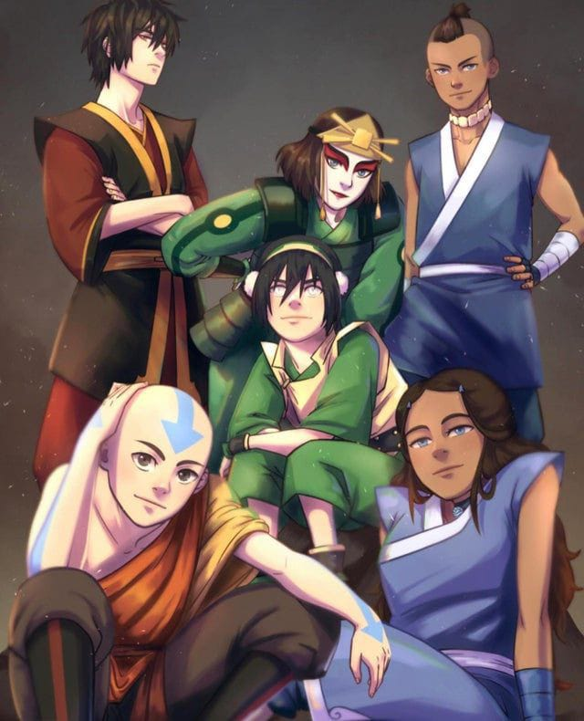

Topo do site
Avatar: The Last Airbender

Avatar: A Lenda de Aang se desenrola em um mundo inspirado em culturas asiáticas.
Nesse universo,
quatro grandes nações coexistem: Tribos da Água, Reino da Terra, Nação do Fogo e Nômades do Ar.
Algumas pessoas, conhecidas como "dobradores", possuem o poder de manipular um dos quatro elementos
da natureza. A cada geração, um Avatar reencarna, com a habilidade de dominar todos os elementos e a
responsabilidade de manter a paz no mundo.
Nos últimos cem anos, a Nação do Fogo tem crescido rapidamente, alcançando a industrialização e
expandindo seu poder através de uma guerra mundial. Avatar Roku, nascido na Nação do Fogo, impediu
inicialmente sua dominação.
Após a morte de Roku, o Avatar reencarna em Aang, um jovem dominador de ar. Porém, Aang descobre sua
identidade de Avatar muito cedo, aos 12 anos, e com medo do que isso acarretaria, ele foge e entra
acidentalmente em um estado de animação suspensa por 100 anos. Quando é finalmente despertado por
Sokka e Katara, da Tribo da Água, ele se depara com a devastação causada pela Nação do Fogo durante
sua ausência, incluindo a aniquilação dos Nômades do Ar.
Sentindo-se culpado, Aang aceita seu dever como Avatar e, com a ajuda de seus novos amigos, embarca
em uma jornada de aprendizado para dominar os quatro elementos. Viajando pelo mundo, eles tentam
ajudar as comunidades a se libertarem do domínio da Nação do Fogo.
A série "Avatar: A Lenda de Aang", criada por Bryan Konietzko e Michael Dante DiMartino, composta
por três temporadas, apresentou uma animação que combinou elementos dos animes japoneses com os
desenhos animados americanos. As referências culturais, incluindo vestimentas, costumes e artes
marciais, foram meticulosamente pesquisadas com base nas culturas do Leste asiático.
O design dos personagens foi influenciado pela história e arte da China, Hinduísmo, Taoismo,
Budismo, ioga e outros elementos. Os movimentos dos dobradores foram coreografados com base em
várias artes marciais chinesas, como T'ai chi ch'uan, Hung Gar, Shaolin do Norte e Tang Lang Quan do
Sul.
A série também se destacou por explorar temas complexos raramente abordados em programas de
televisão infantis ocidentais, como guerra, traumas, opressão, genocídio, imperialismo,
discriminação de gênero, empoderamento feminino, marginalização, diversidade cultural e questões
filosóficas.